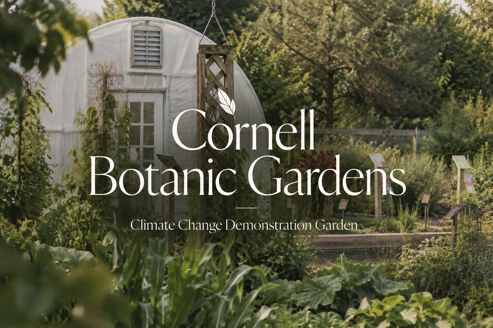

V · On turning eight into one · Wayfinding
Cornell Botanic Gardens
Eight scattered gardens, one Climate Route. A wayfinding system that gives visitors a single story to follow.

The brief
Cornell Botanic Gardens has a Climate Change Garden that shows visitors how local climate change affects plants, and how to mitigate or adapt to it. In spring 2027 it becomes a hub that sends visitors out to satellite spots across the grounds, each showing another nature-based solution.
The Gardens wanted a wayfinding program where hub and satellites work as one system, with consistent materials and language, so the experience feels the same wherever a visitor starts.
Three questions shaped the work:
- How to guide visitors through the hub and get them excited to see the other locations.
- How to get them from the hub, or any satellite, to the other spots.
- How to explain the system at the Visitor Center and online.
What I did
The climate narrative
Eight scattered gardens don't feel like a journey on their own, so the first step was giving them one story to tell.
- The hook: it opens with a question. How will our landscapes thrive in a warmer future?
- The prologue: the Climate Change Garden shows what plants may look like in a warmer 2050, and why the rest of the trail matters.
- Two connected themes: How Nature Protects, the systems that build resilience (Bioswale, Green Roof, Groundcover, Native Lawn), and How Nature Thrives, the plants, pollinators, and biodiversity that depend on them (Buzzline, Pollinator Meadow, Mundy).
- Four categories: each garden is sorted by its main feature (Water, Soil & Land, Plants & Biodiversity, Pollinators), so visitors know what they're looking at.
- No set order: it's a way of thinking, not a required route. Visitors can start anywhere and still connect the dots.
Bringing it to life
Every design piece carries the narrative from start to finish.
- Leaf markers: painted leaves on the ground lead visitors to each garden and introduce the Climate Route's look.
- Send-off sign: rotating panels, matched to the climate themes, preview all eight gardens and spark curiosity to visit more.
- Route map: a symbol for each satellite ties the gardens into one journey and builds the route's brand.
- Symbols on signs: confirm the exact spot so visitors don't get lost, with room for a QR code and passport stamp.
The solution
A connected Climate Route that turns eight separate gardens into one story about how nature protects and thrives in a warming world.
- One narrative that makes every garden feel part of something bigger.
- One visual identity (leaves and symbols) that visitors recognize everywhere.
- One curiosity loop: preview at the hub, navigate with the map, confirm with the symbol, learn at the sign.